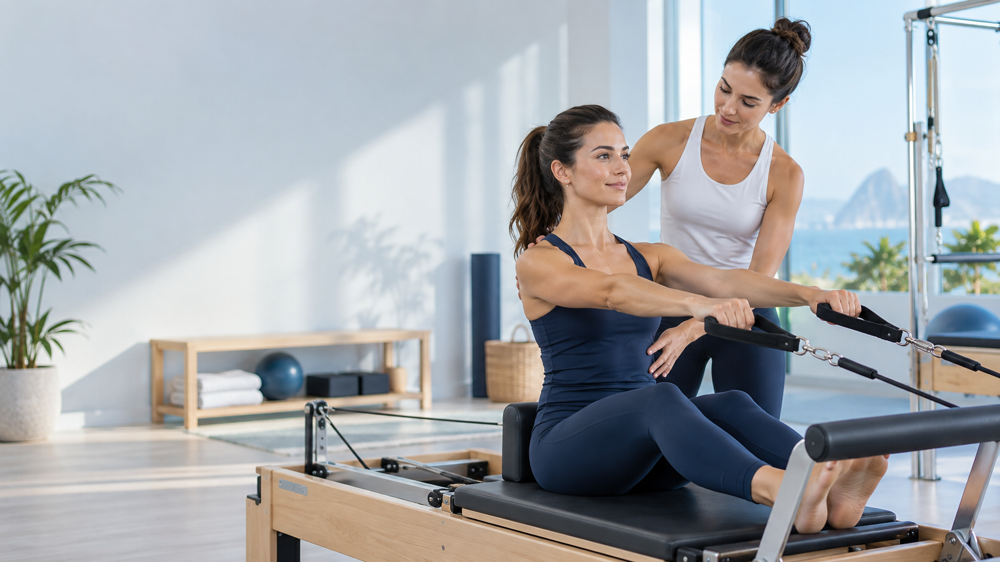

Pilates
Prática orientada para mobilidade, controle, consciência corporal e fortalecimento.
- Movimento adaptado
- Força e estabilidade
- Progressão acompanhada


Avaliação, plano e acompanhamento para transformar movimento em confiança e autonomia.
A Rama organiza o cuidado em uma sequência simples: avaliação, plano, acompanhamento e evolução.
Pilates e fisioterapia se conectam para apoiar prevenção, reabilitação e movimento com mais segurança.

A indicação depende da avaliação e dos objetivos definidos com a equipe.
Consulte a indicação e a disponibilidade diretamente com a Rama.
Prática orientada para mobilidade, controle, consciência corporal e fortalecimento.
Atuação preventiva e de reabilitação para apoiar função, retorno às atividades e autonomia.

Priscila Castro é o nome associado à condução da marca. A comunicação mantém somente essa informação confirmada, sem ampliar títulos ou credenciais.
O foco da experiência é acolher, avaliar e acompanhar com clareza.
Entender rotina, necessidades e objetivos.
Organizar o caminho de cuidado e movimento.
Acompanhar a evolução ao longo do processo.
“Profissionais competentes e ética profissional excelente.”
Zuleica Curado
“Super recomendo o trabalho das fisioterapeutas.”
Patricia Fernandes
“Além de se exercitar, o ambiente tem um astral muito bom.”
Norma de Jesus Sales
“Ambiente acolhedor, bem equipado e impecável.”
Amanda Gondim
“A Priscila adapta a aula para cada necessidade.”
Beth Francis
“Atendimento acolhedor e aulas personalizadas.”
Bianca Farani Rezende
“Melhorei minhas dores no corpo e minha disposição.”
Victoria Vieira
“Aulas personalizadas, eficientes e muito seguras.”
Alice Bandeira
“Um cuidado que respeita o ritmo de cada pessoa.”
Mariana Alves
“A equipe acompanha tudo de perto, com muita atenção.”
Renata Castro
O percurso começa por uma avaliação e segue com plano e acompanhamento.
Pilates, fisioterapia preventiva e reabilitação.
Segunda a sexta, das 8h às 20h. Confirme a agenda pelo WhatsApp.
Rua Antônio Corrêa Júnior, 201, salas 2 e 4
Vigilato Pereira · Uberlândia - MG
Segunda a sexta · 8h–20h